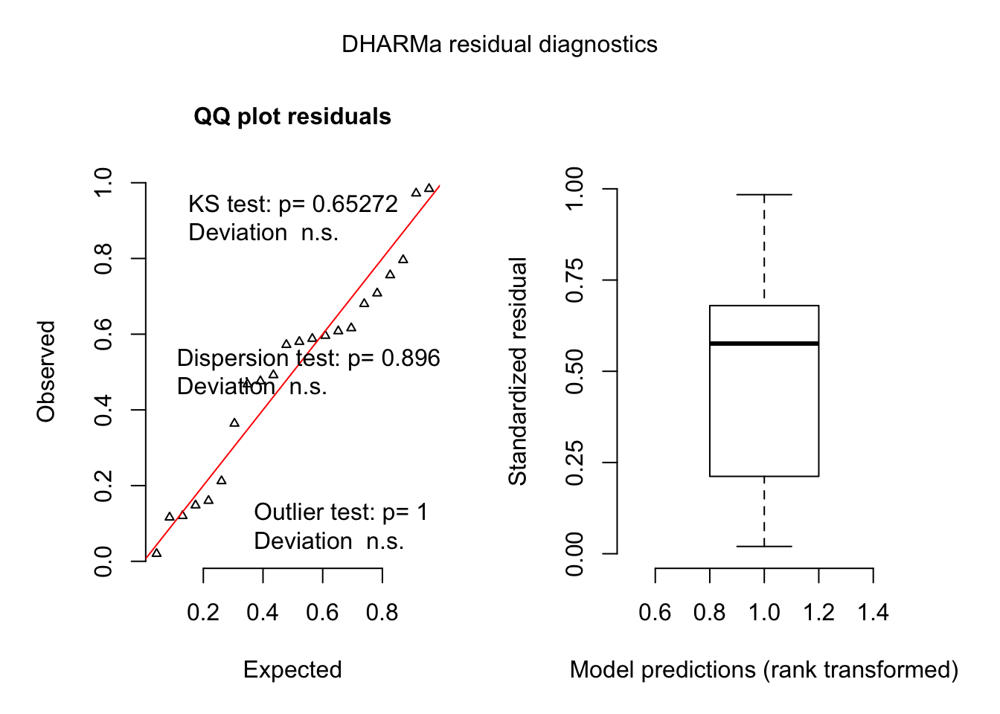
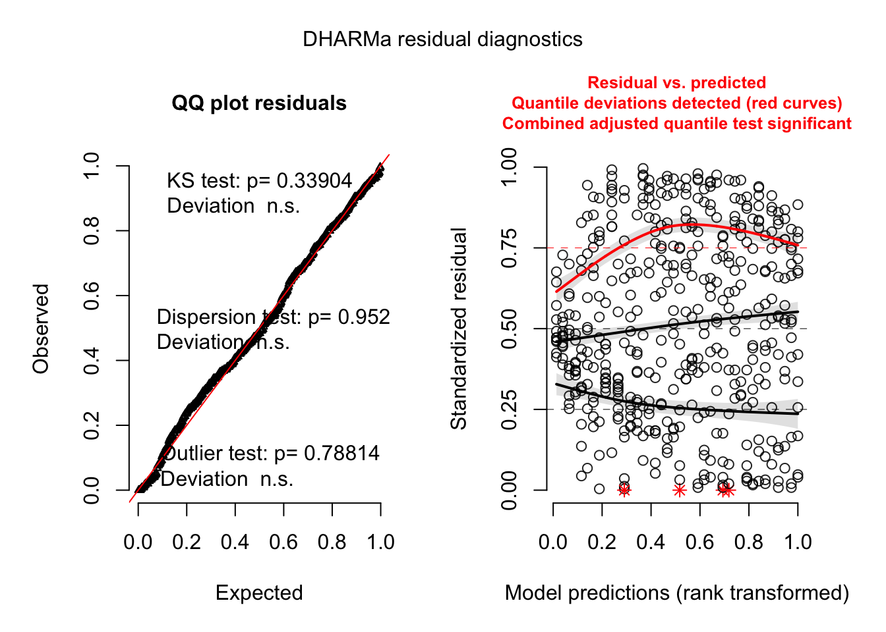
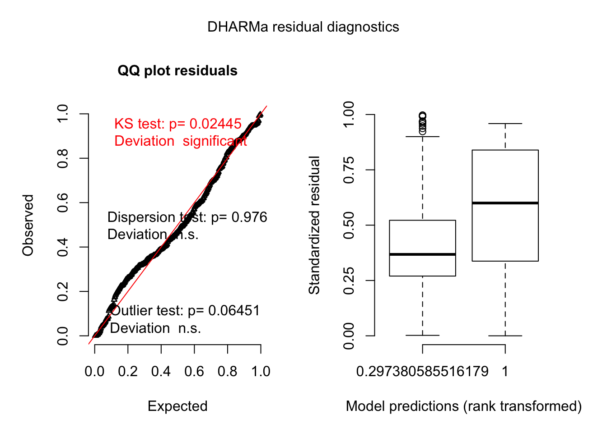

Model 1 - Preference for the green object at baseline
This first model contains the data for all individual guppies. I looked at the green object preference of all guppies in an intercept only model to see if the green object preference at baseline was significantly different from zero.
Variables
green.object.preference is the time spent near the green object subtracted by the time spent near the blue object
Model
baseline.data.model =
lm(green.object.preference ~ 1,
data = baseline.data)Result
| term | estimate | std.error | statistic | p.value |
|---|---|---|---|---|
| (Intercept) | 1.064679 | 3.00754 | 0.3540034 | 0.727 |
At baseline, there was no significant preference for the green object across all guppies (p = 0.727).
Figure 1: Preference for the green object relative to the blue object across all guppies at baseline. Negative values represent more time spent with the blue object, positive values indicate more time spent with the green object. Data are means +/- 95% CI
Model Residuals

Model 2 - Preference for the rewarding object during training
To see whether fish were responsive during training our second model asks whether the preference for the rewarding object changes throughout training between the treatments.
Variables
rewarding.object.preferenceis the time (seconds) spent near the rewarding object subtracted by the time spent near the unrewarding objectrewarding.object.colouris the identity of the rewarding object (blue or green)trialis the number of the training trial. In this model it is supplied as an integeridis the identity of the individual fish
Model
training.data.model =
lmer(rewarding.object.preference ~ rewarding.object.colour * trial + (1 | id),
data = training.data)Results
| term | estimate | std.error | statistic | df | p.value |
|---|---|---|---|---|---|
| rewarding.object.colourgreen | 55.9885527 | 27.340786 | 2.0478033 | 47.15948 | 0.046 |
| trial | 7.6998004 | 1.084800 | 7.0979013 | 438.05233 | < .001 |
| rewarding.object.colourgreen:trial | -0.5487883 | 1.490061 | -0.3682991 | 434.79210 | 0.713 |
Throughout training, over the 20 trials, guppies increased their relative preference for the rewarded object by 7.7 seconds each trial (Figure 2, p < .001).
Figure 2: Preference for the green object in both treatments. Negative values represent more time spent with the blue object, positive values indicate more time spent with the green object. Faded lines connect individuals across trials and solid lines represents a linear fit with 95% CI (grey shading).
Model Residuals

Model 3 - Preference for the rewarded object during testing depending on treatment
Main effects
For the main effects of training and rewarding object colour on rewarding object preference I initially fit a linear mixed effects model with fixed effects of trial and rewarding object colour and a random effect of individual id.
Due to heterogeneity in the variance among groups however, I switched to a generalized linear mixed effects model with a gaussian distribution which also modelled the vaiances to account for variance heterogeneity using the package glmmTMB. My third model asks whether the preference for the rewarding object changed between baseline and final test and looks for an interaction with rewarded object colour.
Variables
rewarding.object.preferenceis the time (seconds) spent near the rewarding object subtracted by the time spent near the unrewarding objectrewarding.object.colouris the identity of the rewarding object (blue or green)trialis the number of the training trial. In this model it is supplied as a factor where 0 is the baseline trial and 21 is the final trialidis the identity of the individual fish
Model
test.data.model =
lmer(rewarding.object.preference ~ trial * rewarding.object.colour + (1 | id),
data = test.data)
test.data.model2 =
glmmTMB(rewarding.object.preference ~ trial * rewarding.object.colour + (1|id) +
diag(0 + rewarding.object.colour:trial |id),
data = test.data, family = gaussian)Results
| term | estimate | std.error | statistic | p.value |
|---|---|---|---|---|
| trial21 | 17.697362 | 10.016982 | 1.766736 | 0.077 |
| rewarding.object.colourgreen | 1.644944 | 5.542077 | 0.296810 | 0.767 |
| trial21:rewarding.object.colourgreen | 65.350592 | 20.832230 | 3.136995 | 0.002 |
I found a significant interaction effect between trial and rewarding object colour (p = 0.002). Guppies that had green rewarded had a final rewarded object preference that was 65.4 seconds stronger than the rewarded object preference of guppies trained to blue (Figure 3).

Figure 3: The initial and final rewarding object preference. Dashed line represents the no preference value. Data are means +/- 95% CI. Bold line connects means across trials.
Model Residuals
Originally I fit a LMM but they variance among the groups was uneven producing the following residual plot.

I therefore used glmmTMB to allow for the modelling of the variances and accounut for heterogeneous variance.

Post-hoc Comparisons
To determine whether the means of the final rewarding object preference for thw two treatments were different I conducted post-hoc comparisons with the package emmeans. I comapred the following means:
- Final test blue-trained and initial test blue-trained
- Final test green-trained and initial test green-trained
- Final test green-trained and final test blue-trained
- Initial test green-trained and initial test blue-trained
test.data.model.pairwise.comparisons =
emmeans(test.data.model2, specs = ~ trial:rewarding.object.colour)
custom.contrasts = contrast(test.data.model.pairwise.comparisons,
method = list("21 blue - 0 blue" = blue21- blue0,
"21 green - 0 green " = green21 - green0,
"21 green - 21 blue" = green21 - blue21,
"0 green - 0 blue" = green0- blue0),
adjust = "mvt") %>% summary(infer = TRUE)Post-hoc comparisons investigating the differences between treatments based on whether guppies are untrained or trained reveals that initially, when untrained, there was no difference in the strength of preference for the rewarding object between the treatments (blue-trained guppies had a blue object preference of 1.8 seconds and green-trained guppies had a green object preference of 3.5 seconds, p < .001).
Comparing the shift in rewarding object preference between initial and final preference tests in blue-trained and green-trained guppies reveals that the shift in rewarding object preference is significant for green-trained guppies but not for blue-trained guppies. Green trained guppies increased their preference for the green object by 83 seconds (going from a green object preference of 3.5 seconds initially to 86.5 seconds at final test, p < .001) whereas blue-trained guppies non-significantly increased their preference for the blue object by 17.7 seconds (going from a blue object preference 1.8 seconds initially to 19.5 seconds at final test, p = 0.251). For a full description of post-hoc comparisons see table 1.
| contrast | estimate | lower.CL | upper.CL | df | p.value |
|---|---|---|---|---|---|
| 21 blue - 0 blue | 17.697 | -7.968 | 43.363 | 34 | 0.251 |
| 21 green - 0 green | 83.048 | 36.247 | 129.849 | 34 | < .001 |
| 21 green - 21 blue | 66.996 | 15.542 | 118.449 | 34 | 0.007 |
| 0 green - 0 blue | 1.645 | -12.555 | 15.845 | 34 | 0.988 |
ESM Model 1 - Preference for the rewarded object during training based on feeding
It might be the case that some fish behaved in a way that was not conducive to learning the association during training. My fourth model asks whether the time spent near the rewarding object during a training session is influenced by whether a fish ate or not. Here trial is a variable containing the training trials (1-20). It is supplied as a random effect along with individual ID in the model.
Variables
rewarding.object.preferenceis the time (seconds) spent near the rewarding object subtracted by the time spent near the unrewarding objectateis a binary factor (Yes or No) and corresponds to whether the fish ate in a given trialtrialis the number of the training trial. In this model it is supplied as an integeridis the identity of the individual fish
Model
training.data.model.rewarding.object =
lmer(rewarding.object.preference ~ ate + (1 | id) + (1 | trial),
data = training.data)Results
| term | estimate | std.error | statistic | df | p.value |
|---|---|---|---|---|---|
| ateyes | 91.18488 | 10.95274 | 8.325303 | 223.7498 | < .001 |
Throughout all of training, fish that ate during a session spent on average 91.2 more seconds near the rewarded object compared to fish that did not eat (Figure, 4, p < .001). Fish that spent more trials eating may therefore have received more reinforcement for the object-food association. This led me to perform my next test which investigated whether there was a difference in food reinforcement between the two treatments.

Figure 4: Preference for the rewarding object during training based on whether an individual ate during a trial or not. Dashed line represents the no preference value. Data are means +/- 95% CI.
Model Residuals

There is a significant deviation from uniformity as indicated by the significant Kolmogorov-Smirnov test. However, this model has a particularly large sample size (n = 456) so even slight deviations will be significant. Looking at the effect size of the deviation (D = 0.0694912) shows that it is minor (D < 0.1) and visual inspection does not suggest large deviations in the residuals so our model is still appropriate.
Model 4 - Is there a difference in feeding attempts between treatments?
A discrepancy in reinforcement between treatments may influence performance on a final preference test. To see whether there was a difference in feeding between treatments I counted the number of trials in which an individual fish ate throughout all of training and compared the feeding counts between treatments. To do this I fit a generalized linear model with a negative binomial distribution. The response variable ‘feeding count’ is a sum of the number of trials in which a guppy ate.
Variables
feeding.countis the number of trials in which an individual fish aterewarding.object.colouris the identity of the rewarding object (blue or green)
Model
feeding.data.model =
glm.nb(feeding.count ~ rewarding.object.colour,
data = my.feeding.data)Results
| term | estimate | std.error | statistic | p.value |
|---|---|---|---|---|
| rewarding.object.colourgreen | 0.0709929 | 0.2628925 | 0.2700452 | 0.787 |
I found no significant difference in the amount of feeding done by individuals trained to green versus individuals trained to blue (Figure 5, p = 0.787) which suggests that the observed group-level differences in final test performance between blue-trained guppies versus green-trained guppies cannot be explained by differences in performance during training.

Figure 5: Average number of trials in which a fish fed during training. Data are means +/- 95% confidence intervals
Model Residuals

ESM Model 2 - Controlling for feeding count
Variables
rewarding.object.preferenceis the time (seconds) spent near the rewarding object subtracted by the time spent near the unrewarding objectrewarding.object.colouris the identity of the rewarding object (blue or green)trialis the number of the training trial. In this model it is supplied as an integeridis the identity of the individual fishfeeding.countis the number of trials in which an individual fish ate
ESM Model 2a - Removing individual that did not feed
There is a fish that did not eat during any trials, however removing this individual does not change the conclusions
Model
test.feeding.data.low.feeders.removed = test.feeding.data %>% filter(feeding.count > 0)
test.feeding.data.low.feeders.removed.model =
glmmTMB(rewarding.object.preference ~ trial * rewarding.object.colour + (1|id) +
diag(0 + rewarding.object.colour:trial |id),
data = test.feeding.data.low.feeders.removed, family = gaussian)Results
| term | estimate | std.error | statistic | p.value |
|---|---|---|---|---|
| trial21 | 24.090287 | 9.694064 | 2.4850556 | 0.013 |
| rewarding.object.colourgreen | 3.041878 | 5.538292 | 0.5492448 | 0.583 |
| trial21:rewarding.object.colourgreen | 58.957599 | 20.678839 | 2.8511079 | 0.004 |
Model Residuals

ESM Model 2b - Including feeding counut as a covariate
Moreover, as I demonstrate in the next model including the amount of trials fed as a covariate in the model does not change the conclusions.
test.data.feeding.controlled.model =
glmmTMB(rewarding.object.preference ~ trial * rewarding.object.colour + feeding.count + (1|id) +
diag(0 + rewarding.object.colour*trial |id),
data = test.feeding.data, family = gaussian)Results
| term | estimate | std.error | statistic | p.value |
|---|---|---|---|---|
| trial21 | 17.6968896 | 9.5533254 | 1.8524324 | 0.064 |
| rewarding.object.colourgreen | 1.2413021 | 5.5140983 | 0.2251142 | 0.822 |
| feeding.count | 0.4940784 | 0.5786047 | 0.8539136 | 0.393 |
| trial21:rewarding.object.colourgreen | 65.3519392 | 19.8470755 | 3.2927743 | < .001 |
The main results do not change if I control for feeding count. The above table is the output feeding controlled model. Below we have the output table for the non-feeding-count controlled model from model 3.
| term | estimate | std.error | statistic | p.value |
|---|---|---|---|---|
| trial21 | 17.697362 | 10.016982 | 1.766736 | 0.0772725 |
| rewarding.object.colourgreen | 1.644944 | 5.542077 | 0.296810 | 0.7666115 |
| trial21:rewarding.object.colourgreen | 65.350592 | 20.832230 | 3.136995 | 0.0017069 |
In both models the p-values are similar. While the effect of feeding count is not significant (p = 0.393) the effect of feeding count trends in the expected direction in our feeding count controlled model. In the effect plot below to the left we see that as feeding count increases the preference for the rewarding object colour also increases.

Model Residuals

Tools used and References
A complete list of the tools used is produced below:
| Package | Version | Reference |
|---|---|---|
| broom | 0.5.5 | David Robinson and Alex Hayes (2020). broom: Convert Statistical Analysis Objects into Tidy Tibbles. R package version 0.5.5. https://CRAN.R-project.org/package=broom |
| broom.mixed | 0.2.6 | Ben Bolker and David Robinson (2020). broom.mixed: Tidying Methods for Mixed Models. R package version 0.2.6. https://CRAN.R-project.org/package=broom.mixed |
| carData | 3.0.3 | John Fox, Sanford Weisberg and Brad Price (2019). carData: Companion to Applied Regression Data Sets. R package version 3.0-3. https://CRAN.R-project.org/package=carData |
| DHARMa | 0.3.3.0 | Florian Hartig (2020). DHARMa: Residual Diagnostics for Hierarchical (Multi-Level / Mixed) Regression Models. R package version 0.3.3.0. http://florianhartig.github.io/DHARMa/ |
| dplyr | 1.0.2 | Hadley Wickham, Romain François, Lionel Henry and Kirill Müller (2020). dplyr: A Grammar of Data Manipulation. R package version 1.0.2. https://CRAN.R-project.org/package=dplyr |
| effects | 4.1.4 | John Fox and Sanford Weisberg (2019). An R Companion to Applied Regression, 3rd Edition. Thousand Oaks, CA http://tinyurl.com/carbook |
| emmeans | 1.5.1 | Russell Lenth (2020). emmeans: Estimated Marginal Means, aka Least-Squares Means. R package version 1.5.1. https://CRAN.R-project.org/package=emmeans |
| Formula | 1.2.3 | Achim Zeileis, Yves Croissant (2010). Extended Model Formulas in R: Multiple Parts and Multiple Responses. Journal of Statistical Software 34(1), 1-13. doi:10.18637/jss.v034.i01 |
| ggplot2 | 3.3.0 | H. Wickham. ggplot2: Elegant Graphics for Data Analysis. Springer-Verlag New York, 2016. |
| ggpubr | 0.2.5 | Alboukadel Kassambara (2020). ggpubr: ‘ggplot2’ Based Publication Ready Plots. R package version 0.2.5. https://CRAN.R-project.org/package=ggpubr |
| glmmTMB | 1.0.0 | Mollie E. Brooks, Kasper Kristensen, Koen J. van Benthem, Arni Magnusson, Casper W. Berg, Anders Nielsen, Hans J. Skaug, Martin Maechler and Benjamin M. Bolker (2017). glmmTMB Balances Speed and Flexibility Among Packages for Zero-inflated Generalized Linear Mixed Modeling. The R Journal, 9(2), 378-400. |
| Hmisc | 4.3.1 | Frank E Harrell Jr, with contributions from Charles Dupont and many others. (2020). Hmisc: Harrell Miscellaneous. R package version 4.3-1. https://CRAN.R-project.org/package=Hmisc |
| knitr | 1.30 | Yihui Xie (2020). knitr: A General-Purpose Package for Dynamic Report Generation in R. R package version 1.30. |
| lattice | 0.20.38 | Sarkar, Deepayan (2008) Lattice: Multivariate Data Visualization with R. Springer, New York. ISBN 978-0-387-75968-5 |
| lme4 | 1.1.21 | Douglas Bates, Martin Maechler, Ben Bolker, Steve Walker (2015). Fitting Linear Mixed-Effects Models Using lme4. Journal of Statistical Software, 67(1), 1-48. doi:10.18637/jss.v067.i01. |
| lmerTest | 3.1.1 | Kuznetsova A, Brockhoff PB, Christensen RHB (2017). “lmerTest Package:Tests in Linear Mixed Effects Models.” Journal of StatisticalSoftware, 82(13), 1-26. doi: 10.18637/jss.v082.i13 (URL:https://doi.org/10.18637/jss.v082.i13). |
| magrittr | 2.0.1 | Stefan Milton Bache and Hadley Wickham (2020). magrittr: A Forward-Pipe Operator for R. R package version 2.0.1. https://CRAN.R-project.org/package=magrittr |
| MASS | 7.3.51.4 | Venables, W. N. & Ripley, B. D. (2002) Modern Applied Statistics with S. Fourth Edition. Springer, New York. ISBN 0-387-95457-0 |
| Matrix | 1.2.18 | Douglas Bates and Martin Maechler (2019). Matrix: Sparse and Dense Matrix Classes and Methods. R package version 1.2-18. https://CRAN.R-project.org/package=Matrix |
| pbkrtest | 0.4.8.6 | Ulrich Halekoh, Søren Højsgaard (2014). A Kenward-Roger Approximation and Parametric Bootstrap Methods for Tests in Linear Mixed Models - The R Package pbkrtest. Journal of Statistical Software, 59(9), 1-30. URL http://www.jstatsoft.org/v59/i09/. |
| psych | 1.9.12.31 | Revelle, W. (2019) psych: Procedures for Personality and Psychological Research, Northwestern University, Evanston, Illinois, USA, https://CRAN.R-project.org/package=psych Version = 1.9.12. |
| R | 3.6.2 | R Core Team (2019). R: A language and environment for statistical computing. R Foundation for Statistical Computing, Vienna, Austria. URL https://www.R-project.org/. |
| report | 0.2.0 | Makowski, D., Lüdecke, D., & Ben-Shachar, M.S. (2020). Automated reporting as a practical tool to improve reproducibility and methodological best practices adoption. CRAN. Available from https://github.com/easystats/report. doi: . |
| survival | 3.1.8 | Therneau T (2015). A Package for Survival Analysis in S. version2.38, <URL: https://CRAN.R-project.org/package=survival>. |
| tidyr | 1.0.2 | Hadley Wickham and Lionel Henry (2020). tidyr: Tidy Messy Data. R package version 1.0.2. https://CRAN.R-project.org/package=tidyr |